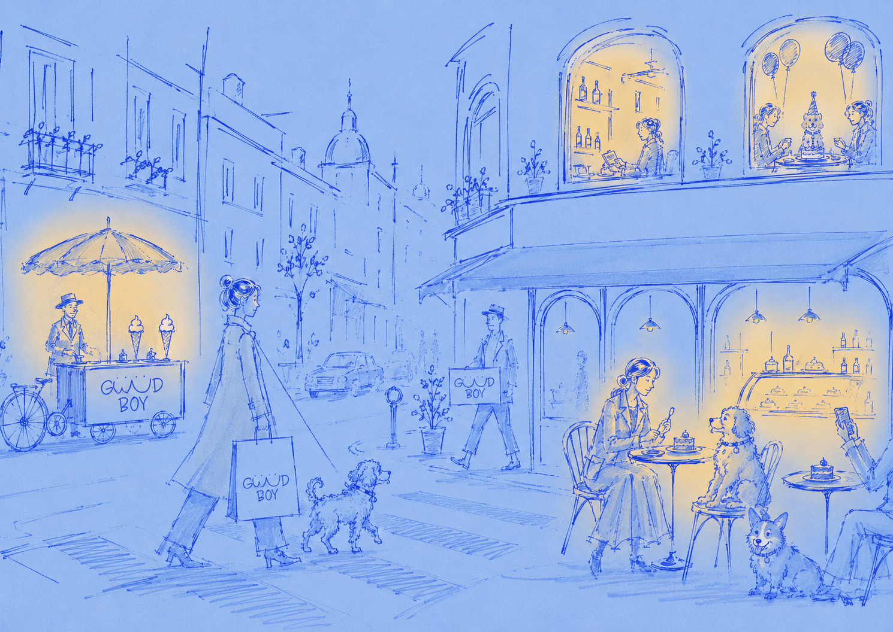

Страница не найдена
404
Похоже, эта улочка никуда не ведёт. Запрашиваемая страница не существует или была перенесена.
На главную
Страница не найдена
Похоже, эта улочка никуда не ведёт. Запрашиваемая страница не существует или была перенесена.
На главную